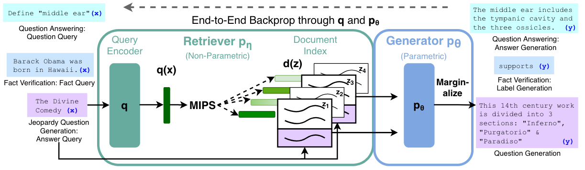

Retrieval-Augmented Generation for Knowledge-Intensive NLP Tasks (2021)
RAG란?
RAG는 쿼리와 관련 있는 문서를 검색하고 문서의 정보를 활용하여 텍스트를 생성하는 모델입니다.
RAG의 구조

RAG 모델은 Retriever와 Generator라는 두 개의 모델이 결합되어 있습니다.
- Retriever
- 쿼리와 문서를 벡터 표현으로 바꾸고, 문서 저장소에서 쿼리와 관련 있는 문서를 찾아냅니다.
- 문서 정보를 잘 함축하는 BERT 기반의 인코더 모델을 사용합니다.
- 논문에서는 두 개의 BERT 모델을 사용하는 DPR 구조를 사용했습니다. 두 인코더 모델이 쿼리와 문서를 각각 인코딩합니다.
- Generator
- 쿼리와 문서가 결합된 입력 텍스트를 받아 출력을 생성합니다.
- 문장을 생성할 수 있는 seq2seq 모델을 사용합니다.
- 논문에서는 BART 모델을 사용했습니다.
Retriever: DPR
Retriever은 DPR을 기반으로 설계되었습니다. DPR은 두 개의 인코더로 구성됩니다.
- document encoder 문서 인코더
- 문서를 문서 임베딩으로 만듭니다.
- 논문에서는 FAISS 문서 저장소를 사용해 문서 인덱스를 만들었습니다.
- query encoder 쿼리 인코더
- 쿼리를 임베딩으로 만듭니다.
이렇게 서로 다른 인코더로 만든 쿼리 벡터와 문서 벡터 간 내적을 계산하고, 쿼리 벡터와의 내적이 최대가 되는 문서 k개를 가져옵니다. 쿼리와 문서에 서로 다른 인코더를 사용하면 어떤 점이 좋을까요? 올바른 쿼리-문서 쌍이 더 높은 내적 값을 가질 수 있도록 쿼리와 문서 인코더를 훈련시킬 수 있습니다.
RAG 학습과 답변 생성
RAG 학습하기
두 개의 인코더와 한 개의 생성 모델까지 모델이 총 3개나 결합된 모델을 어떻게 학습할까요? 다행히 생각보다는 쉽게 학습할 수 있습니다.
- 사전훈련된 모델을 가져와 retriever와 generator로 사용합니다.
- retriever에 사용할 두 encoder는 사전훈련된 DPR 모델에서 가져옵니다.
- 쿼리 인코더와 생성 모델만 fine-tuning 합니다.
- 문서 인코더를 학습하게 되면 문서 인덱스도 매번 업데이트 해야하여 큰 비용이 발생합니다. 또한 문서 인코더 학습이 성능 향상에 꼭 필요하지 않아 논문에서도 제외했다고 합니다.
- input-output 쌍으로 구성된 데이터셋으로 retriever와 encoder를 한 번에 학습합니다.
- retriever 학습을 위해 질문-문서 쌍 데이터를 따로 준비하지 않습니다.
- 모델 output과 실제 output 간 marginal log-likelihood를 최소화하도록 가중치를 업데이트합니다.
RAG Token vs RAG Sequence
retriever가 쿼리와 관련 있는 문서를 여러 개 뽑아올 수 있습니다. 원하는 개수의 답변을 만들기 위한 두 가지 방법이 있습니다.
- RAG Sequence
- 쿼리-문서 쌍마다 답변 시퀀스를 생성하고, 답변 시퀀스를 모두 합쳐(marginalize) 최종 출력 시퀀스를 만듭니다.
- RAG Token
- 문서를 한 번에 참조하여 답변 토큰을 하나하나 생성합니다.
- retriever가 반환한 문서 임베딩과 쿼리 임베딩을 배치 행렬 곱(bmm)하여 얻은 점수(doc_score)를 얻습니다. 이 점수를 디코딩 과정에 반영합니다.